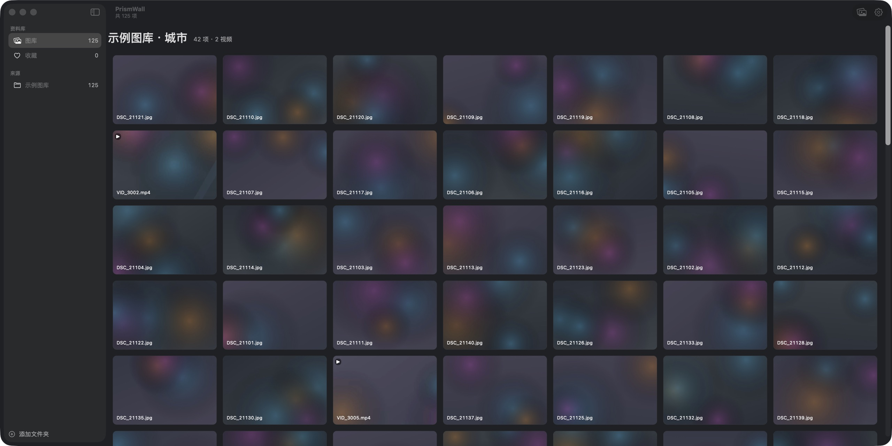
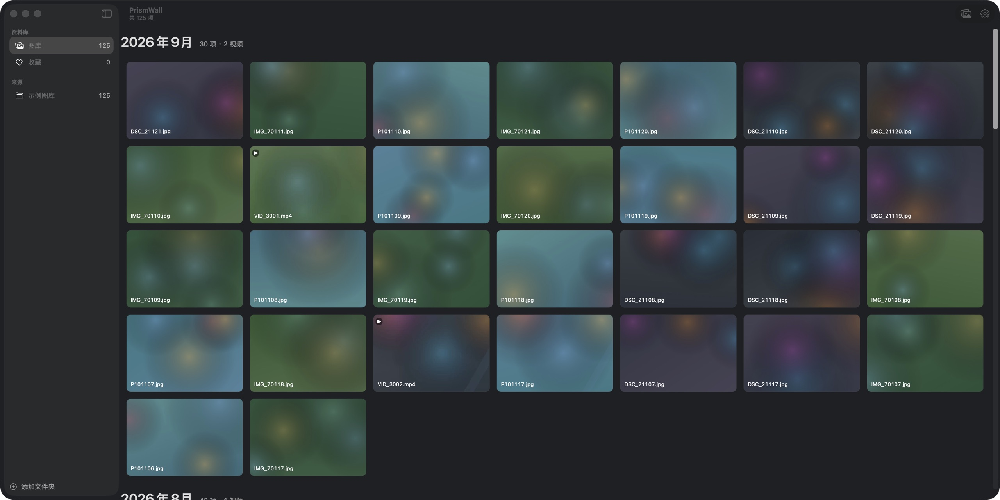
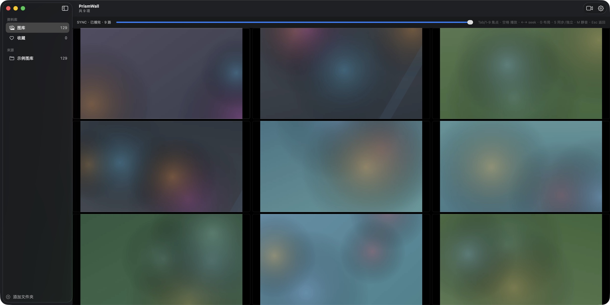

01
一目了然。
十万张照片视频,铺成一面粉彩墙。缩略图流畅滚动,点击放大看 EXIF, 按时间或按文件夹,全凭你心情。

完全本地运行的 macOS 媒体管理软件。零网络权限,沉浸式媒体墙, 多视频同屏对照——为摄影师、创作者和所有在意隐私的人打造。
下载 v1.0.0 macOS 14+ · Apple Silicon · 免费
十万张照片视频,铺成一面粉彩墙。缩略图流畅滚动,点击放大看 EXIF, 按时间或按文件夹,全凭你心情。

多视频舞台同步播放,偏差小于 5 毫秒,声音跟随焦点。 ⌘ 多选即进舞台,Tab 切焦点,G 键换布局。

不申请任何网络权限——系统不允许它联网,这不是承诺,是技术事实。
| ✓不申请任何网络权限 | 用系统命令即可公开验证 |
| ✓数据全部留在本机 | 索引与缓存仅存于你的用户目录 |
| ✓移除来源不删文件 | 磁盘上的原始文件零改动 |
| ✓发布包自动隐私审计 | 6 项检查:文件白名单 / 敏感字符串 / 零网络等 |
安装后可自行验证:codesign -d --entitlements /Applications/PrismWall.app
打开 DMG,把 PrismWall.app 拖入「应用程序」,首次打开多一次「仍要打开」的确认。
拖入「应用程序」文件夹后,在终端执行:
xattr -cr /Applications/PrismWall.app
为什么会被拦截?PrismWall 尚未经过 Apple 公证(需要付费开发者账号)。 不想用命令的话:系统设置 → 隐私与安全性 → 仍要打开(仅首次需要)。
照片 App 管理它自己的图库;PrismWall 管理你硬盘上任意文件夹里的照片视频,保留你的文件夹组织方式,并提供照片 App 没有的多视频同屏对照能力。
完全开源、完全免费(MIT 协议),源码公开可审计。没有付费墙,也没有广告。
照片:JPEG / PNG / HEIC / WebP / TIFF 等;视频:MP4 / MOV / M4V 等(H.264 / HEVC)。
技术上不可能:App 不存在任何网络权限,系统不允许它发起网络连接。欢迎用 Little Snitch 等工具监控验证。